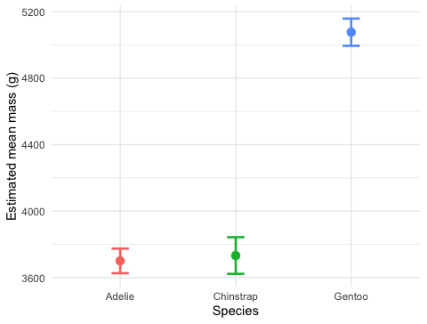

Reading the F table, finding which groups differ, and writing it up
2026-09-01
mass_model <- lm(body_mass_g ~ species, data = penguins_df) — fitNote
✅ Transition
The model is fit and its assumptions are checked. Today we actually read the F table, find which species differ, and turn the result into a sentence a reader can trust.
aov() and car::Anova()emmeans post-hoc testsTools today:
car — Anova()emmeans, multcomp — post-hoc, CLDTextbook:
Naming: models → _model, plots → _plot
This lecture runs in two short chunks. After each chunk you switch to the activity and type the code yourself.
For every code block, do three things:
Note
✅ Why bother? (the evidence)
type = "II" yourself in Anova() is what makes you notice it’s there — paste the line and you’ll never ask why it matters for unbalanced groups.We will cover: the ANOVA table two ways — base aov() and car::Anova() — and why the difference matters for unbalanced data.
Tip
🖐 After this chunk: Activity Parts 7–8 (run both, read F / df / p).
aov() and summary()Note
🔮 Predict first: The boxplot from Lecture 13 looked very separated. Predict the p-value — closer to 0.5, 0.05, or far below 0.001?
Df Sum Sq Mean Sq F value Pr(>F)
species 2 146864214 73432107 343.6 <2e-16 ***
Residuals 339 72443483 213698
---
Signif. codes: 0 '***' 0.001 '**' 0.01 '*' 0.05 '.' 0.1 ' ' 1Reading the table:
| Column | Meaning |
|---|---|
Df |
groups − 1, and residual df |
F value |
between ÷ within variance |
Pr(>F) |
the p-value for H₀ |
p < 0.05 → reject H₀ → at least one species differs. But which? Chunk 2.
For unbalanced data we prefer car::Anova(). I’ll reach for it but type lowercase, and forget the package:
R stops:
Error in Anova(mass_model) :
could not find function "Anova"The fix — load car, and mind the capital A:
Tip
✅ Why show a broken run?
anova() and Anova() are two entirely different functions that happen to differ by one capital letter — R will not guess which one you meant. Watching the exact error message land here means you’ll recognize it instantly instead of re-checking your spelling three times when it happens mid-assignment.
car::Anova() — Type II for Unbalanced DataWhy Type II?
Note
anova() = Type I (order-dependent). Anova(type = "II") = order-independent.
Run aov() + summary(), then car::Anova(type = "II"). Predict the F and p before you read them, and confirm both tables agree.
We will cover: ANOVA says “some differ” — emmeans says which, with the comparisons properly adjusted.
Tip
🖐 After this chunk: Activity Parts 9–11 (pairwise tests, letters, plot, report).
Note
🔮 Predict first: From the boxplot, predict — will all three species differ from each other, or will two be statistically tied?
contrast estimate SE df t.ratio p.value
Adelie - Chinstrap -32.4 67.5 339 -0.480 0.8807
Adelie - Gentoo -1375.4 56.1 339 -24.495 <0.0001
Chinstrap - Gentoo -1342.9 69.9 339 -19.224 <0.0001
P value adjustment: tukey method for comparing a family of 3 estimates Reading it:
emmeans(..., pairwise ~ species) gives each group’s mean and every pairwise comparison📖 W&S §15.4 — planned vs. unplanned comparisons
species emmean SE df lower.CL upper.CL .group
Adelie 3701 37.6 339 3627 3775 a
Chinstrap 3733 56.1 339 3623 3843 a
Gentoo 5076 41.7 339 4994 5158 b
Confidence level used: 0.95
P value adjustment: tukey method for comparing a family of 3 estimates
significance level used: alpha = 0.05
NOTE: If two or more means share the same grouping symbol,
then we cannot show them to be different.
But we also did not show them to be the same. How to read letters:
This is the compact summary you see in published figures — one letter above each bar.
Tip
Install once: install.packages("multcomp")
mass_emm_plot <- as.data.frame(mass_emm$emmeans) %>%
ggplot(aes(x = species, y = emmean, color = species)) +
geom_point(size = 3) +
geom_errorbar(
aes(ymin = lower.CL, ymax = upper.CL),
width = 0.15, linewidth = 0.9
) +
labs(x = "Species", y = "Estimated mean mass (g)") +
theme_minimal() +
theme(legend.position = "none")
mass_emm_plot
Estimated marginal means with 95% confidence intervals.
The emmeans plot is the ANOVA cousin of Lecture 03’s mean ± SE plot.
Anova Table (Type II tests)
Response: body_mass_g
Sum Sq Df F value Pr(>F)
species 146864214 2 343.63 < 2.2e-16 ***
Residuals 72443483 339
---
Signif. codes: 0 '***' 0.001 '**' 0.01 '*' 0.05 '.' 0.1 ' ' 1“Body mass differed significantly among the three penguin species (one-way ANOVA: F(2, 339) = 343.6, p < 0.001). Tukey-adjusted comparisons showed all three species differed, with Gentoo heaviest and Adelie lightest.”
Always include:
Never write “p = 0.000” — use “p < 0.001”.
Run the emmeans pairwise test, get the letters, plot the means ± CI, and write your results sentence. Predict which species differ before you run the comparisons.
Concepts:
R skills:
aov() + summary()car::Anova(model, type = "II")emmeans(model, pairwise ~ group) + multcomp::cld()References:
Up next — Lecture 15: